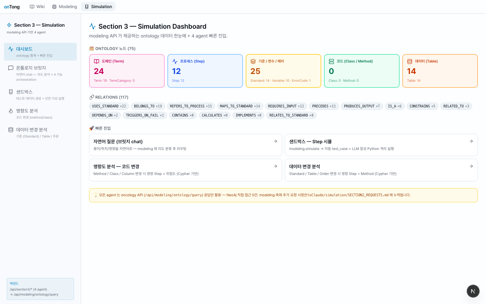
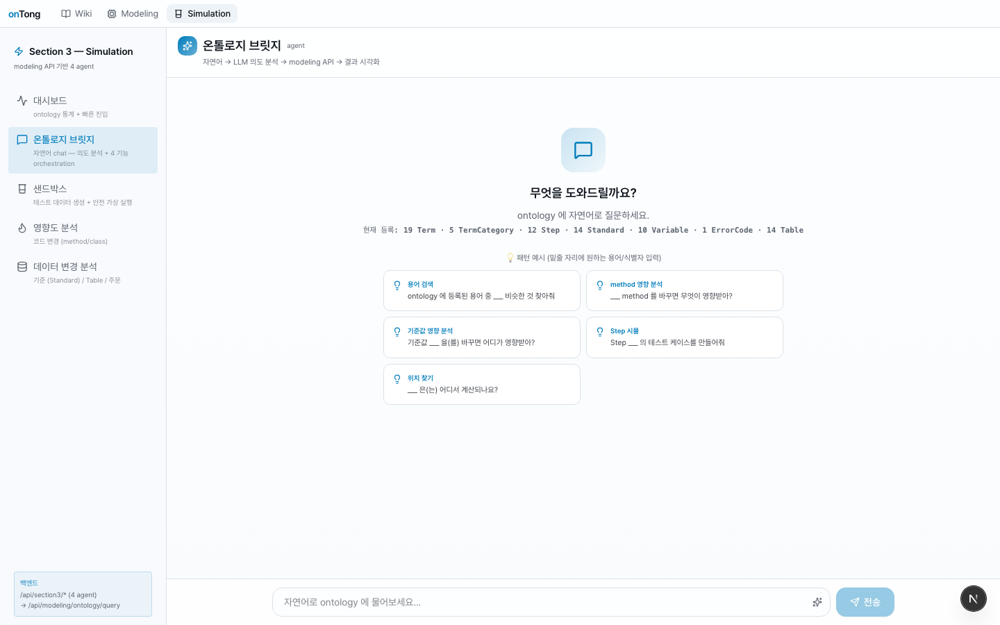
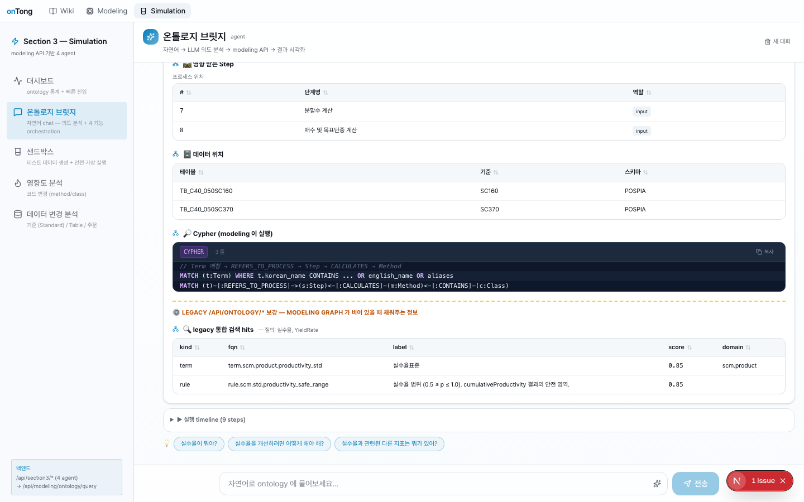
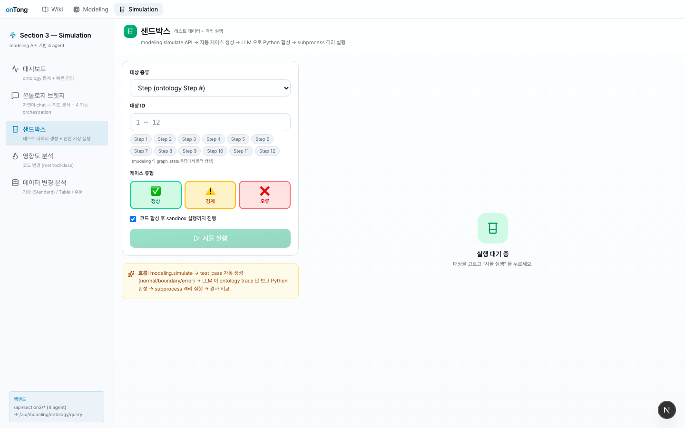
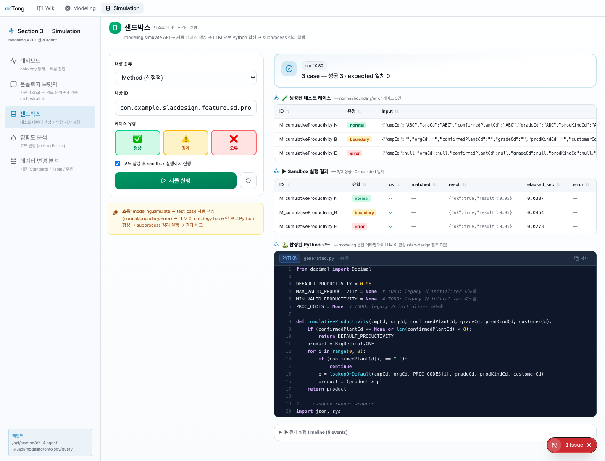
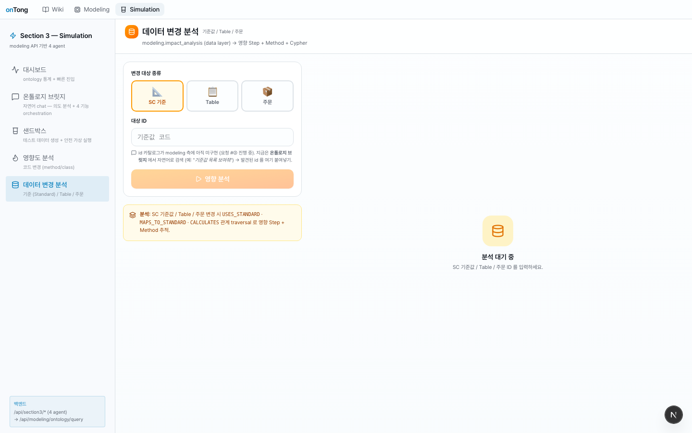

onTong · Section 3 — Simulation
modeling Neo4j 적재 ❌ — ontology API 실시간 호출 → AST 파싱 → Python 실행까지 한 흐름
composer + AST + sandbox 동작 검증 완료
tree-sitter-java
SSE 스트리밍
Section 2 미수정
📐 핵심 파이프라인
사용자 발화 / fqn 입력
↓
[1] OntologyComposer legacy /api/ontology/* 실시간 호출 (병렬 7종)
├─ actions/{fqn} params · output · realizations
├─ code-methods/{fqn}/call-sites 호출 그래프
├─ code-methods/{fqn}/anchor-bindings literal · guard line
├─ code-types/{class_fqn} methods.body_text · fields
├─ business-rules?repo_id= enforced_by 매칭
├─ modules/inventory/actions method ↔ action 인덱스
└─ repos/{repo_id}/graph?mode=neighborhood 시각화 trace
↓
[2] JavaToPython AST tree-sitter-java → Python source
null → None · && → and · BigDecimal → Decimal
length() → len() · charAt(i) → s[i]
for(int i=0;i<N;++i) → for i in range(0, N)
↓
[3] Sandbox subprocess JSON stdin → run() 호출 → stdout JSON result
↓
UI : SSE 스트리밍 — thinking · layer_scan(영향 메서드, 룰, anchor, …) · final
🖥 화면에서 확인 가능한 5 panel
① 대시보드 — graph_stats 그대로 노출

② 온톨로지 브릿지 (chat)

시연: "실수율이 어디서 계산되나?" 입력

실수율 (YieldRate) + Step 2개 + Table 2개 + legacy 검색으로 rule 까지 추가 표시.③ 샌드박스 — composer + AST + subprocess

시연:
ProductivityService.cumulativeProductivity 메서드 시뮬

result = 0.95 (Java 로직 그대로).
우측 하단에 생성된 Python 코드 그대로 표시 — DEFAULT_PRODUCTIVITY = 0.95 가 anchor_locator 에서 추출되어 prelude 에 들어감.
④ 영향도 분석 — 코드 변경

시연:
cumulativeProductivity 변경 시 영향

⑤ 데이터 변경 분석

business-rules.statement · anchor-bindings.target_slot 매칭 + search 통합 검색까지 한 호출 합성.
modeling 의 impact_analysis(standard_value) 분기 버그를 우회.
📤 Section 2 (Modeling) 에 정말 필요한 3건
49 endpoint 전수 호출 감사 결과, Section 3 가 legacy /api/ontology/* 만으로 자체 합성 가능. 기존 7건 요청은 우회 완료로 보류. 진짜 필수 3건만 남음.
| # | 우선순위 | 제목 | 목적 / 막힘 정도 | Section 3 활용처 |
|---|---|---|---|---|
| 1 | 🔴 필수 | search 한국어 / aliases / 한↔영 매칭 |
사용자 한국어 발화 ("실수율" "주문") 시 legacy /api/ontology/search 가 0 hit. chat UX 정보량 절반. |
BridgeChatPanel · CodeImpactPanel · DataImpactPanel 의 자동완성 · explain enrich |
| 2 | 🔴 필수 | action.output 55% → 90%+ backfill |
38 action 중 21 (55%) 이 output: null. sandbox 의 expected_output 검증 불가. |
SandboxPanel 의 case 검증 — expected 자동 생성, 결과 일치 표시 |
| 3 | 🟡 권장 | repos/.../graph default mode 명시 + include_kinds 동작 검증 |
default 가 60 nodes 라 UI 가 무거움. include_kinds 동작 spec 불명확. |
OntologyGraphSVG — mode=neighborhood&hops=2 적당한 크기 시각화 |
상세는 SECTION2_REQUEST_ESSENTIAL.md 참조.
📊 작업 통계
49
호출한 ontology endpoint
127
raw 응답 (variant 포함)
2
자체 신규 모듈 (composer / transpiler)
4
전환된 agent (bridge · sandbox · code-impact · data-impact)
0
Section 2 수정 (단독 우회)
3
Section 2 에 남은 필수 요청